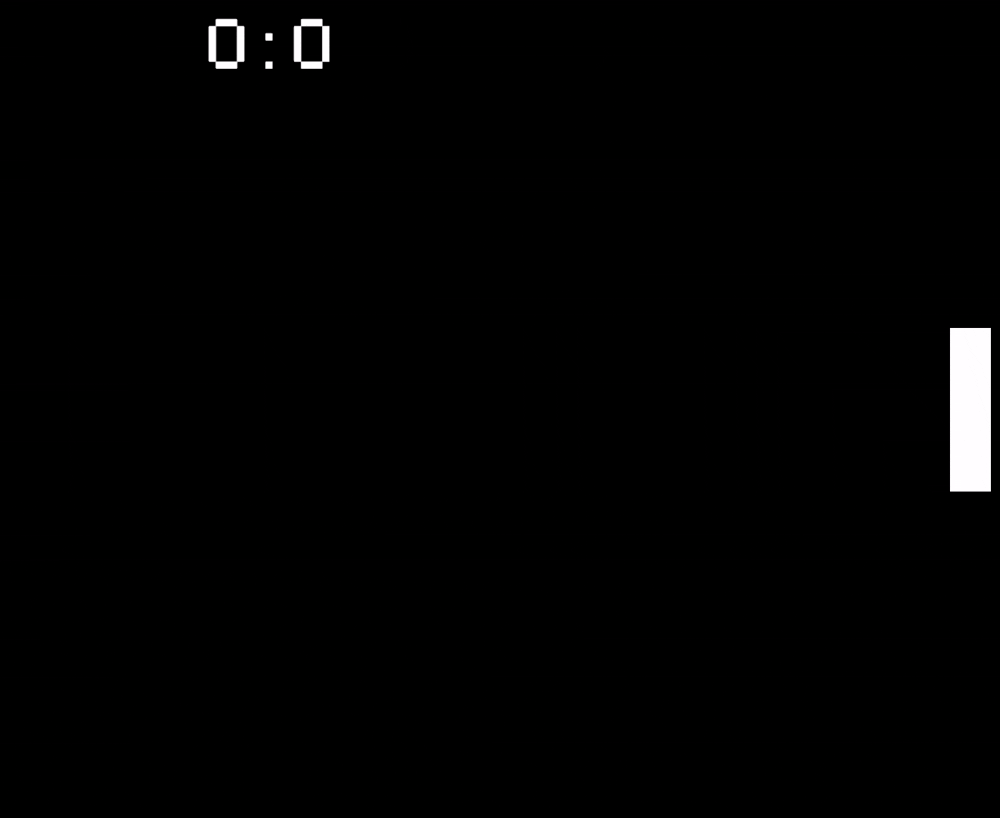
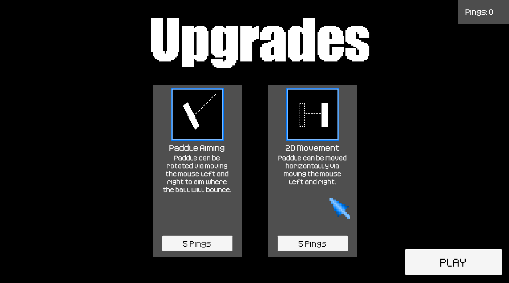

Fun Fact
I originally tried thinking about how to make a Pong-based game at the age of 6, but did not know enough trigonometry to do so - a decade later I returned to make it a reality.
Overview
Pong-Meister was my second ever full-scale coding/video game project, and the first to reach a state warranting being released online. The core game mechanics were based on the classic "Pong" game. However, I also implemented a variety of additional systems which are unlocked over the course of gameplay. These range from activated abilities, such as temporarily reducing the size of the ball, to passive mechanics, including the ball losing a portion of its speed when hitting a wall. While I never got around to properly balancing the game following its initial release, I was still satisfied with the project, particularly in the context of a learning experience.


Pong-Meister includes both a progression-based gamemode, which serves as a means of gradually introducing all of the unique mechanics the game includes, and an infinite mode, carrying on the spirit of my original inspiration for starting the project. For both modes, I developed my own algorithm-based AI opponent which leverages a system of predicting the path of the ball to determine the position to move the paddle to. This system is also fully capable of using all of the custom game mechanics, even incorporating a somewhat limited degree of "intelligence" regarding the optimal usage of each ability given the state of the ball and each player's paddle.
Fun Fact
The game evolved from the simple idea of seeing how long a human player could last against a perfect Pong AI if the speed of the ball increased indefinitely.